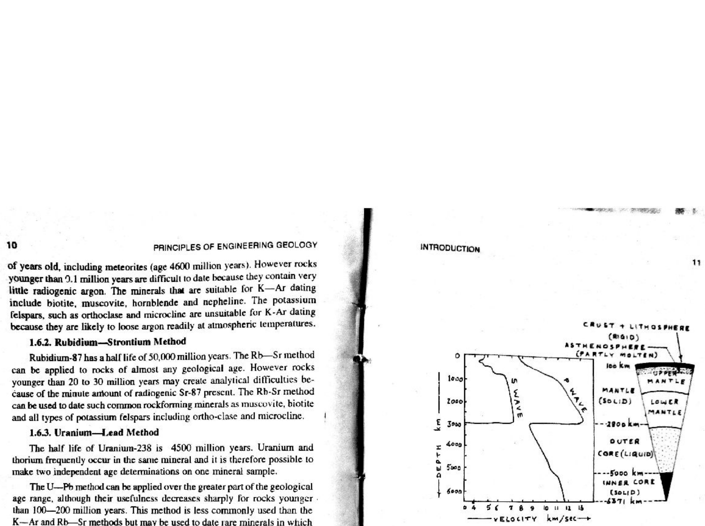

GEO - 2/21 • Deep Earth Seismology
Q44: Deep Earth Seismology: P-Wave Core Transmission & PKIKP Phases
44.1 Core Discontinuities & Seismic Wave Propagation
In global seismology and deep Earth geophysics (Inge Lehmann, 1936; Beno Gutenberg, 1914; Peter Shearer, Introduction to Seismology, Ch. 4; Fowler, Ch. 4), the Earth's core boundary architecture was discovered through seismic ray tracing:
| Seismic Boundary | Depth | Physical Nature & Discontinuity | Wave Transmission Behavior |
|---|---|---|---|
| Core-Mantle Boundary (CMB) | $2890\text{ km}$ | Gutenberg Discontinuity: Boundary between solid silicate lower mantle and liquid iron-nickel outer core. | S-waves are completely terminated (shear modulus $\mu = 0$ in liquid). P-waves are transmitted, but sharply refracted downward because velocity drops from $13.7\text{ km/s}$ in mantle to $8.0\text{ km/s}$ in liquid core. |
| Inner Core Boundary (ICB) | $5150\text{ km}$ | Lehmann Discontinuity: Boundary between liquid outer core and solid crystalline iron-nickel inner core. | P-waves are transmitted across the ICB into the inner core, with a sharp velocity jump from $10.3\text{ km/s}$ to $11.0\text{ km/s}$, reflecting and refracting through to the antipodal surface. |
44.2 Nomenclature of Core Seismic Phases
Standard International Seismological Centre (ISC) ray code notation defines:
- P: Compressional wave traveling through the mantle.
- K: Compressional wave traveling through the liquid outer core (from German Kern).
- I: Compressional wave traveling through the solid inner core.
- PKIKP: A compressional wave that traverses the mantle (P), refracts through the outer core (K), penetrates through the solid inner core (I), passes back through the outer core (K), and ascends through the mantle (P) to arrive at antipodal seismographs ($142^\circ - 180^\circ$).
Thus, it is an immutable physical fact that the P-wave is transmitted through the outer core as well as the inner core.


Q44. Which statement is true about P wave ?
VERIFIED ANSWER: OPTION (C)
Correct Answer: (C) The P wave is transmitted through the outer as well as the inner core. — Compressional P-waves penetrate through the liquid outer core (as K waves) and traverse through the solid inner core (as I waves), generating the classic PKIKP phase.
Option-by-Option Critical Dissection
- (A) The P wave reflected from the mantle-core boundary — INCORRECT: While a small fraction of energy reflects as PcP, the primary phenomenon is that P-waves refract into and are transmitted through the core.
- (B) The P wave is transmitted through the outer core but reflected from the inner core — INCORRECT: P-waves are not simply reflected at the inner core boundary; Inge Lehmann (1936) proved that P-waves refract directly through the solid inner core (PKIKP phase).
- (C) The P wave is transmitted through the outer as well as the inner core — CORRECT: Precisely describes the fundamental transmission capability of longitudinal P-waves through both the liquid and solid core compartments.
- (D) The P wave is reflected from the crust-mantle boundary — INCORRECT: P-waves pass directly through the Moho into the mantle, undergoing refraction rather than total reflection.
High-Yield Seismological Ray Tracing Suite
| Seismic Phase Code | Complete Ray Path Trajectory | Epicentral Distance Arrival Range |
|---|---|---|
| P | Direct mantle compressional wave | $0^\circ - 103^\circ$ |
| PcP | Reflected from mantle-core boundary (CMB) back to surface | $0^\circ - 90^\circ$ |
| PKP (PKPab, PKPdf) | Transmitted through mantle and liquid outer core | $142^\circ - 180^\circ$ |
| PKIKP | Transmitted through Mantle → Liquid Outer Core → Solid Inner Core → Outer Core → Mantle | $110^\circ - 180^\circ$ (Antipodal arrivals) |
| S-Wave Shadow Zone | $103^\circ - 180^\circ$ (No direct S-waves arrive because liquid outer core cannot transmit shear waves) | Worldwide beyond $103^\circ$ |